Stella-Plage 2010

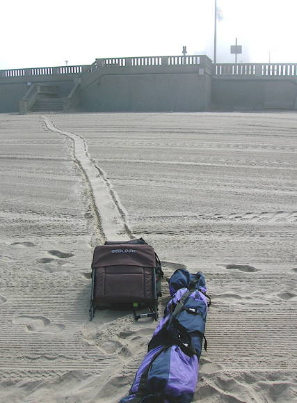
Stella-Plage Cucq-Trépied, dit Stella en langage cervolistique (on le comprend !), et c'est 4 jours de festival... Au matin du vendredi, la plage est nickel, je la déflore avec mon sac sur roulettes, pas très fonctionnelles dans ces conditions!

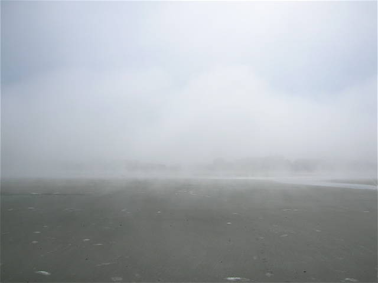
Un bon brouillard ce matin. En prenant mon petit-déjeuner, je ne voyais pas la mer, dommage ! On voit qu'en fait le brouillard monte beaucoup de la plage qui reçoit ses premiers rayons...

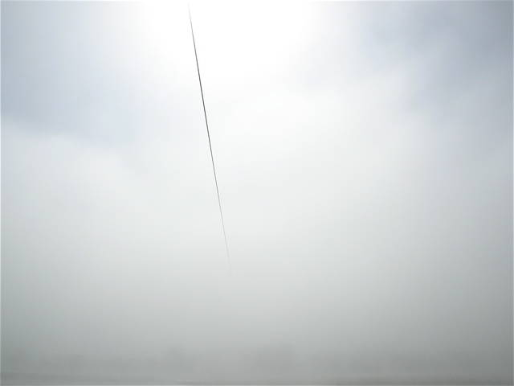
Un peu de vent quand même, assez pour mon Spiralier qui, je crois, devait être au bout de la ficelle !

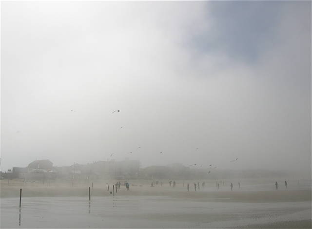
Les enfants des écoles arrivent aussi, vendredi c'est leur jour, Jean-Claude ne va pas arrêter de découper de la bouteille toute la journée. En attendant, ils arrivent à voler avec les cerfs-volants qu'ils ont fabriqués...

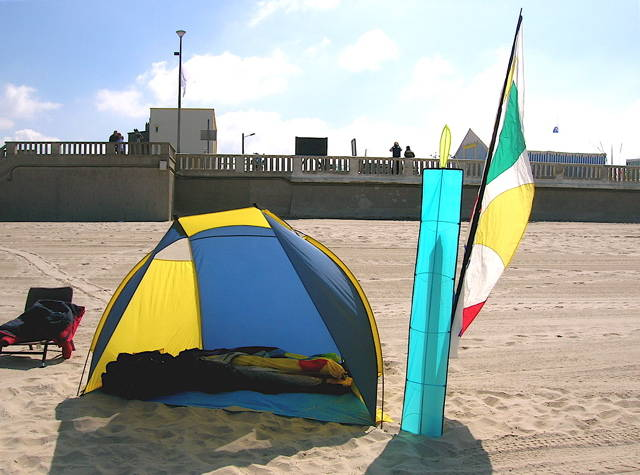
J'ai établi mon campement, le brouillard s'est dissipé et je vais pouvoir faire le premier vol de ma bougie finie la veille avant de partir... C'est en fait la première fois que je la monte au complet !

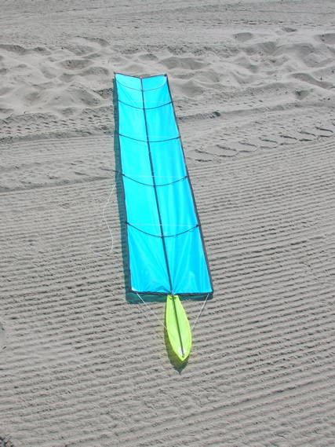
Voilà la bête, pour l'édification des CVCFistes ! Je constate que j'ai oublié de mettre le tendeur de l'arc avant, et il faut que je fixe le milieu de tous les arcs à la toile pour qu'ils ne pivotent pas...

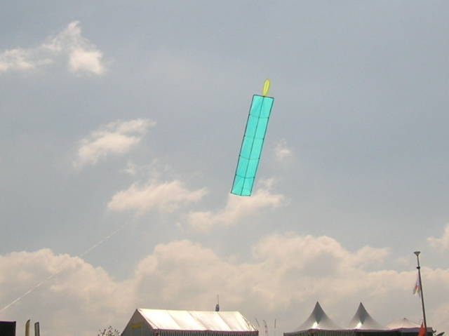
Et voilà, ça vole quand même. J'ai juste dû courber un peu plus les arcs pour éviter une oscillation divergente d'un bord à l'autre...

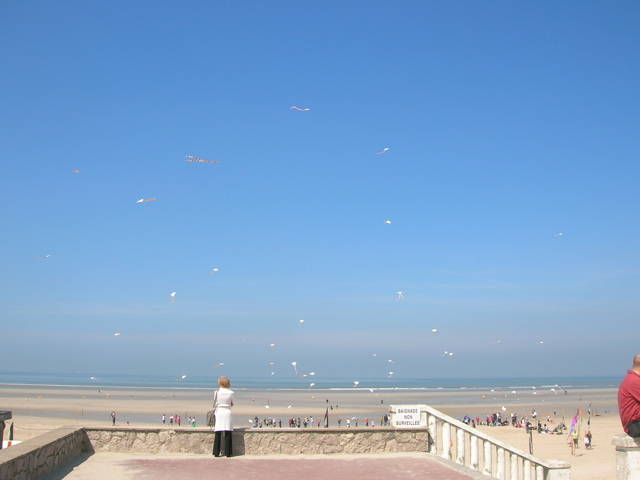
Les enfants des écoles sont maintenant très nombreux, le terrain principal, rond, leur est réservé...

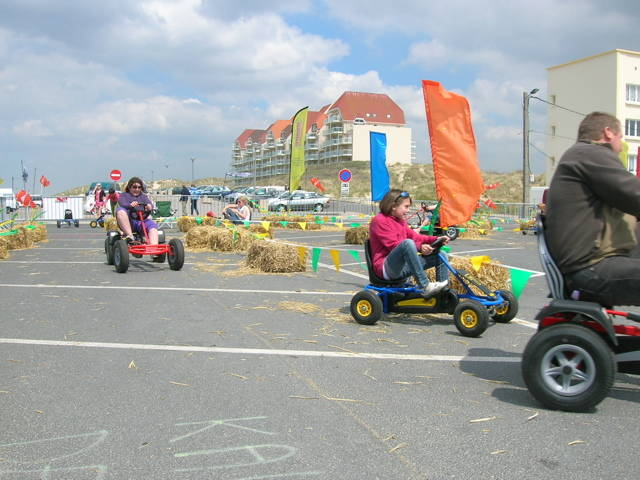
Sur la Promenade, diverses attractions comme ce circuit de karting (à pédales, quand même...) où s'affrontent grands et petits...

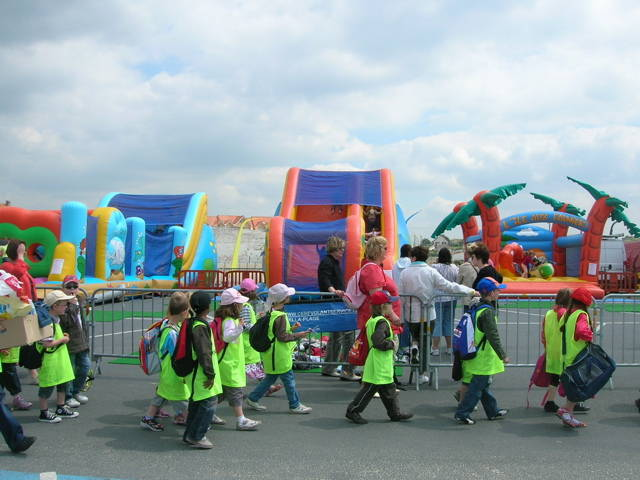
De grands châteaux gonflables ont aussi été montés, les enfants s'y rendent dans leur uniforme voyant !

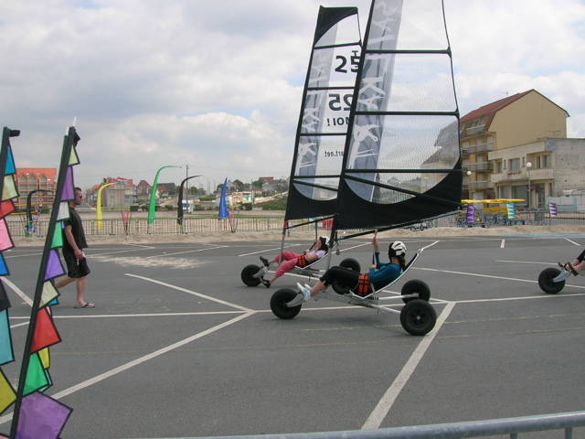
Comme l'année dernière, où j'en avais fait un petit essai, un terrain est réservé au Sail-kart, ce char à voile démontable qui tient dans un coffre de voiture...

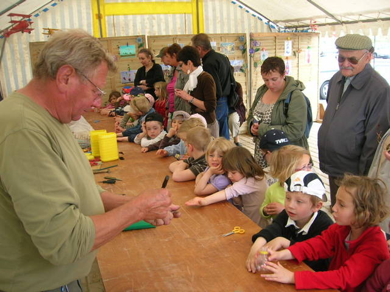
Jean-Claude Anquier reçoit les enfants et leur explique comment construire un moulinet-fleur avec une bouteille en plastique, un bouchon, un clou et une baguette pour manche ! Il a tellement de clients qu'Antoinette tient un autre atelier parallèle, ce qui double la cadence !

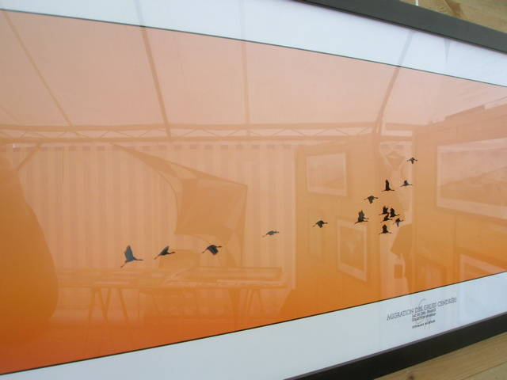
Un photographe, Stéphane Morvan, a droit à une demi-tente pour exposer ses photos... et les vendre... J'ai admiré cette belle photo de grues, au Lac du Der, en Champagne, étape de leur migration annuelle...

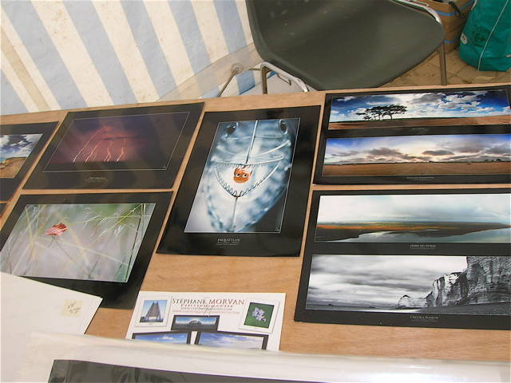
Il en expose d'autres sur une table, dont cette artistique image du poisson de Joël Goupil !

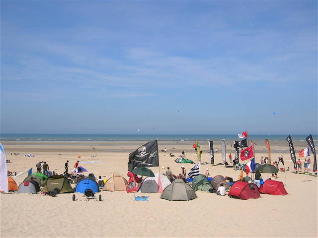
Sur la plage, les Pirates, Gwenn Ha Du et assimilés ont établi leur camp autour du drapeau noir !

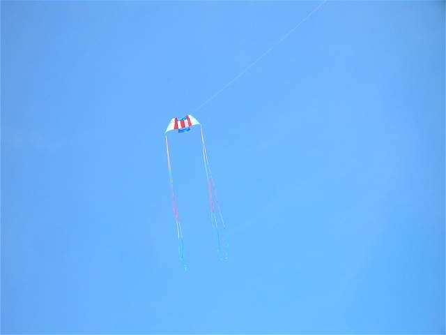
Samedi matin, Michel Haquette est déjà en l'air avec ce cerf-volant spécial, ailes à vergues et caissons Conyne, bien stable...

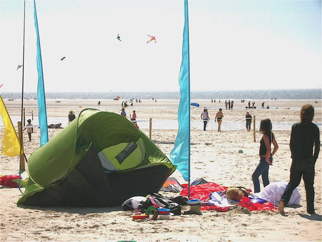
La bande des Cerf-Vol'Aisne participe au montage des bannières des terrains, etc, le matin, et n'a pas eu le temps de bien arrimer sa tente, bientôt, il faudra une échelle pour y entrer !

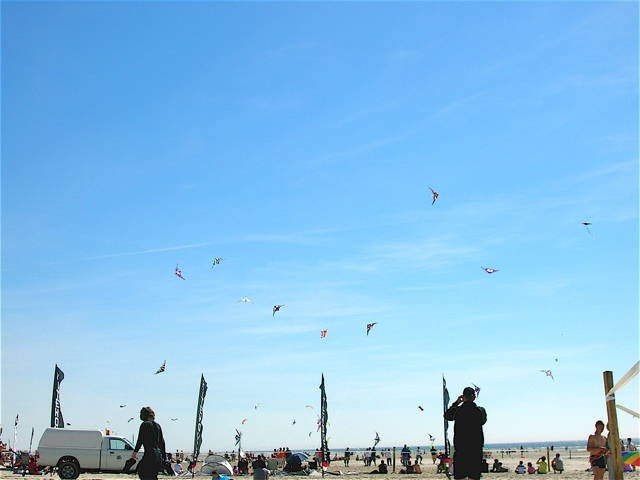
Ce n'est pas évident, mais ceci est un Mégateam. Au fil des jours, il se fera plus étoffé et plus homogène, bien sûr...

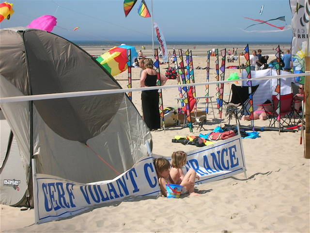
Le CVCF a établi sa banderole, qui plaît bien aux enfants !

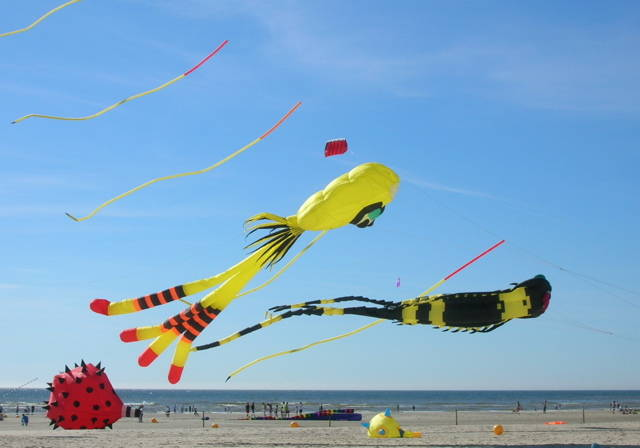
Le vent est maintenant assez fort pour que les Flandre'Envol de Sylvain Goeury, Damien Debril et autres lancent leurs gros gonflables, comme cette méduse rigolote et volumineuse !

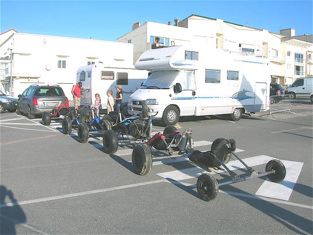
Au soir, un classique de Stella : les chars regagnent le terrain de camping attelés derrière une voiture. Il faut 2 rames complètes pour rapatrier le tout...

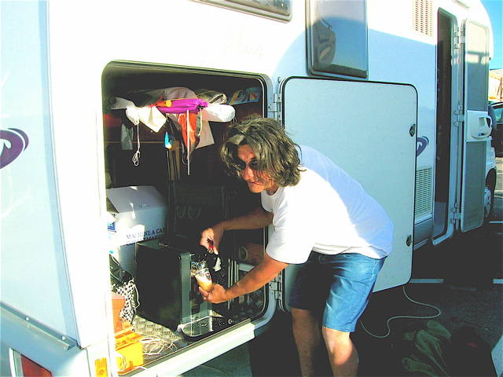
Bernard Ghesquière, lui, reste camper ici ! Mais il est supérieurement équipés avec cette pompe à bière perfectionnée offerte par ses enfants et qui lui permet de me tirer un demi de Leffe à... 3 degrés !

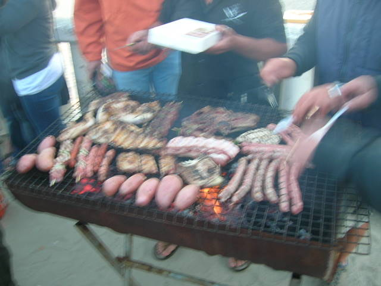
Ce soir barbecue Pirates... Aucun repas n'est offert par l'organisation, ça manque beaucoup pour se rencontrer ! Les Pirates fournissent les équipements et le charbon, et chacun amène son morceau (et un peu plus en général !). Chacun amène aussi à boire, et il n'y a pas en général de pénurie de ce côté...

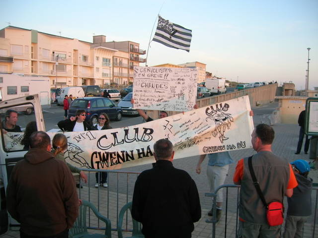
Au camping (offert), les douches sont froides depuis le début, et William organise une manif de protestation !

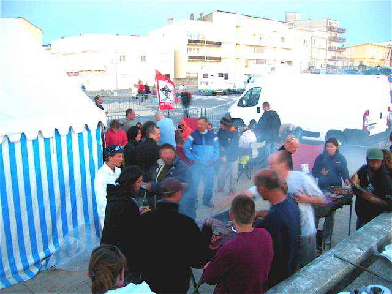
Le barbecue tourne bien, il y aura 58 présents ce soir ! Il a lieu ici, car c'est maintenant interdit dans le camping, sans doute pour satisfaire les écologistes des Dunes...

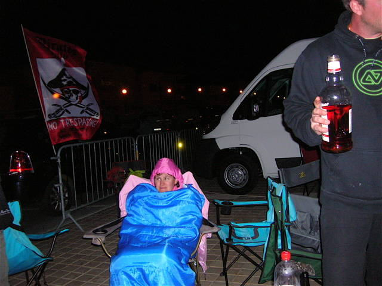
La soirée avance, tout le monde n'a pas forcément trop chaud ni ne s'est prémuni grâce à une dose honnête d'antigel !

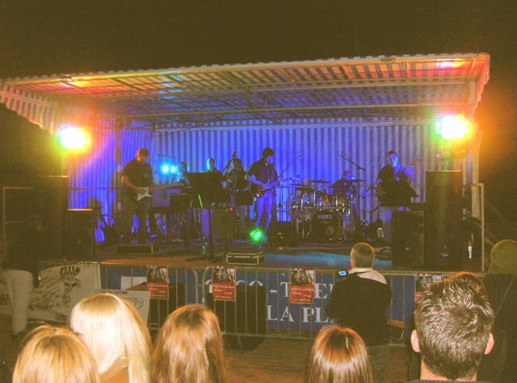
Parallèlement, un concert se déroule sur l'estrade centrale, pas extraordinaire, mais pas mauvais non plus ! Mais le public se déplace peu le soir, et les cervolistes sont au barbecue !

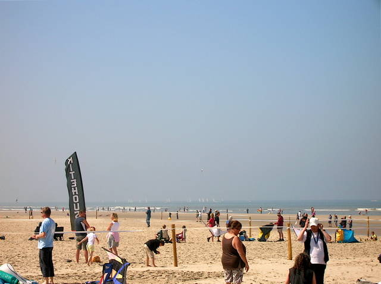
Dimanche, ce sera une très belle journée, pas un nuage et un bon petit vent montant à force 3 ou 4 en fin d'après-midi, parfait pour nous ! Parfait aussi pour la régate du dimanche des clubs de yachting, on voit les voiles au départ, sur la gauche...

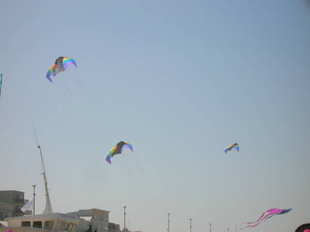
Les Gwenn ont sorti leurs grandes NASAs, au ras de la promenade...

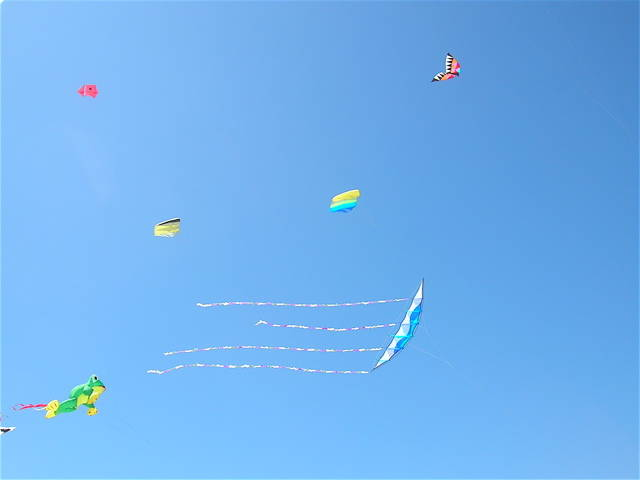
Somain et ceux qui y ont fait un atelier ont sorti leurs grenouilles. Et Michel Chantren montre ce beau cerf-volant en arc, une toile verticale et de petites voiles porteuses horizontales tendues par des joncs...

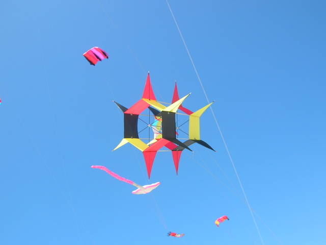
Voici encore un Revolver, de Michel Van Reckem, simplifié : seule la partie interne tourne...

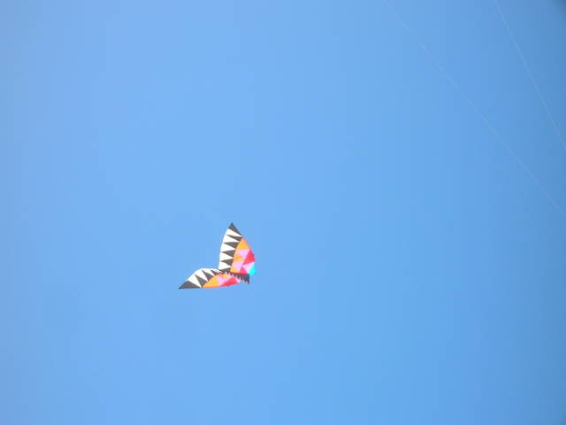
Et un delta très coloré, tout en triangles assemblés...

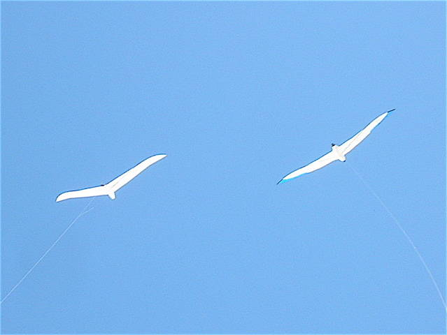
Arnaut Lefèvre a apporté son Albatros à lui pour le simili concours de création, sans récompenses et même sans classement...

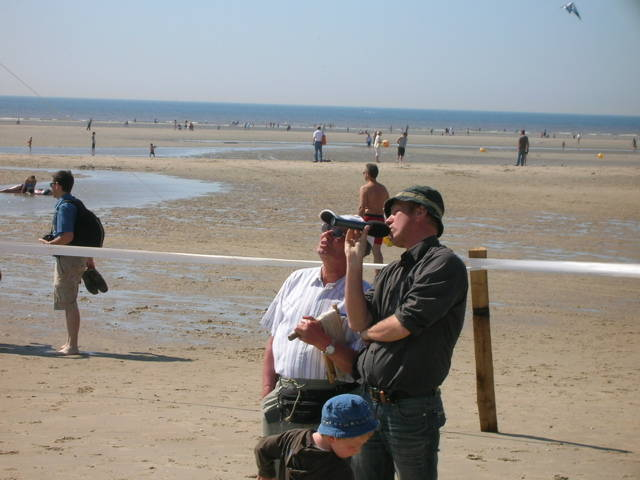
Dominique fait le tour des concurrents pour les présenter, eux et leurs créations ! Ici, Michel Haquette avec un cerf-volant "à l'ancienne".

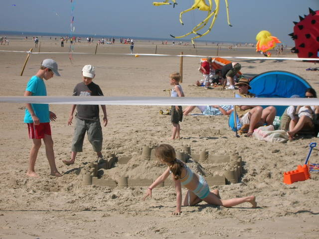
Derrière, les enfants n'en ont cure et construisent de somptueux châteaux de sable !

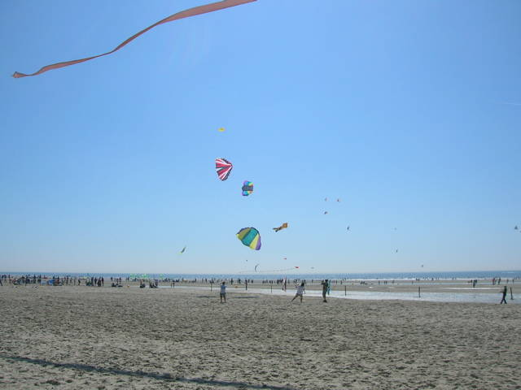
Les Gwenn se lancent encore dans un vol de groupe avec leurs grandes Nasas, ils aiment quand ça tire !

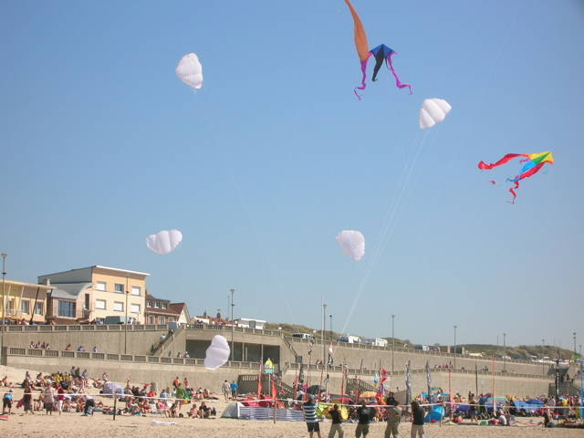
Les Pirates font aussi une présentation, un peu plus construite et harmonieuse, en poursuite derrière Yves...

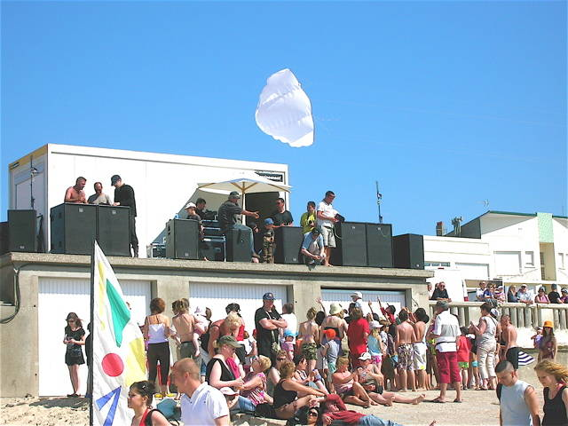
Dominique soigne l'animation, il se lance dans des jeux de questions avec pleins de petites récompenses : drapeaux de Pirates, dés à coudre de décoration en porcelaine, nécessaires à Scoubidous, etc... Jean-Michel fait son possible pour semer le bazar, avec sa Nasa blanche !

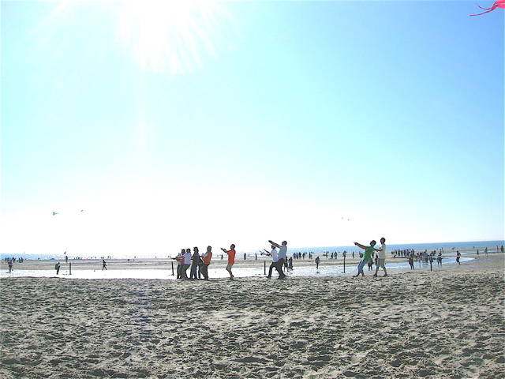
Pour finir cette belle journée, un Mégateam s'impose, bien sûr, leadé par Richard Debré...

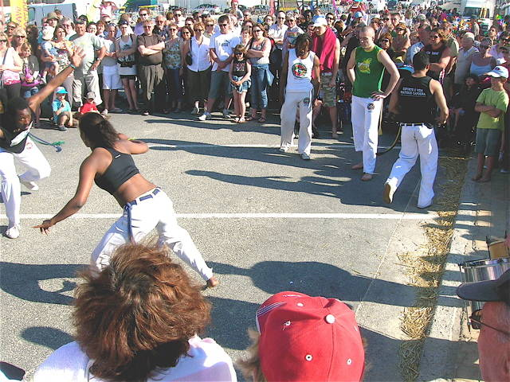
Ensuite, remise des prix, mais d'abord, une démo de Capoera, ce combat-danse très spectaculaire !

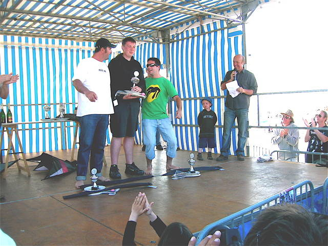
Remise des prix, un vrai classement pour les pilotables, c'est un Allemand, Thorsten Quelquechose qui a gagné, Richard Debré est seulement deuxième !

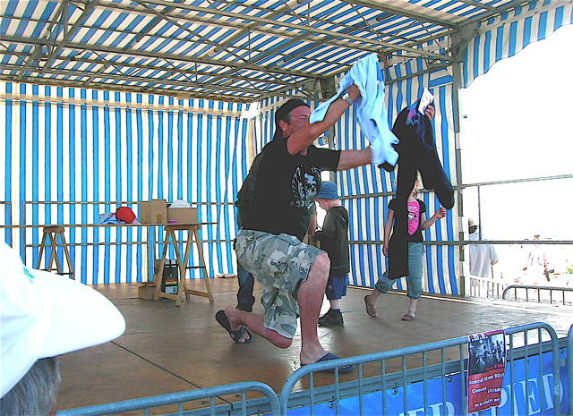
Ensuite, pas de classement, c'est seulement un tirage de lots par des mains innocentes entre tous les participants... Jean-Michel a gagné, il éclate de joie... pour rire ! Deux flow-forms assez gros seront même gagnés par les monofilistes...

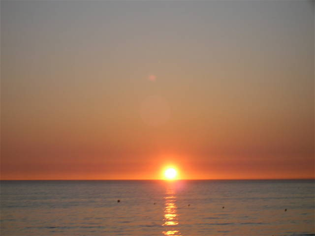
Le soleil se couche, ensuite il y aura encore barbecue ce soir, c'est bien agréable !

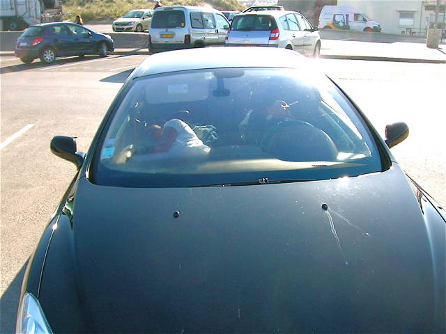
Lundi matin, une voiture garée en travers sur le parking, ce couple-là a dû se coucher tard, pourtant ils ne sont pas Pirates !

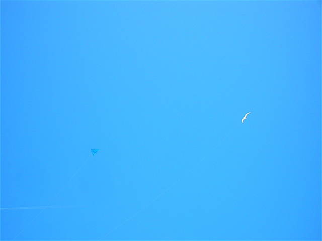
Un peu de brise de mer en bas, et du vent assez fort au-dessus, à partir de 80 m environ, mais entre les deux, presque rien ! Il faudra beaucoup d'effort et des cerfs-volants légers pour arriver là-haut, mais ensuite, c'est constant et hyper-stable...

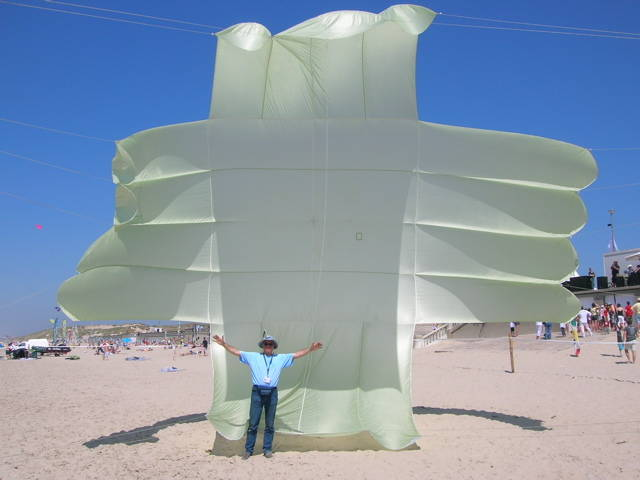
Prof (Olivier) a profité du petit vent pour ressortir son parachute de récupération de drone militaire, une belle bête en spi léger, j'ai posé devant pour donner l'échelle... Il en a aussi récupéré 5 ou 6 autres, à tout hasard, ils partaient à la poubelle !

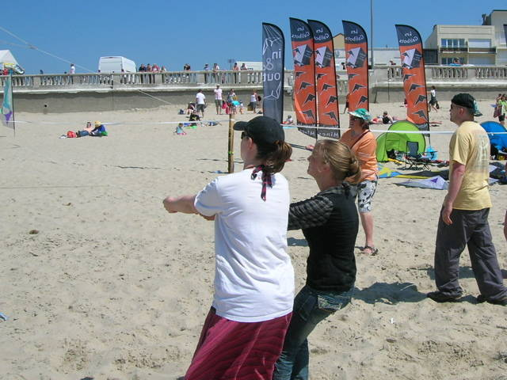
Mais, avec ce vent, même de faibles femmes peuvent le maintenir, sous la direction de Prof...

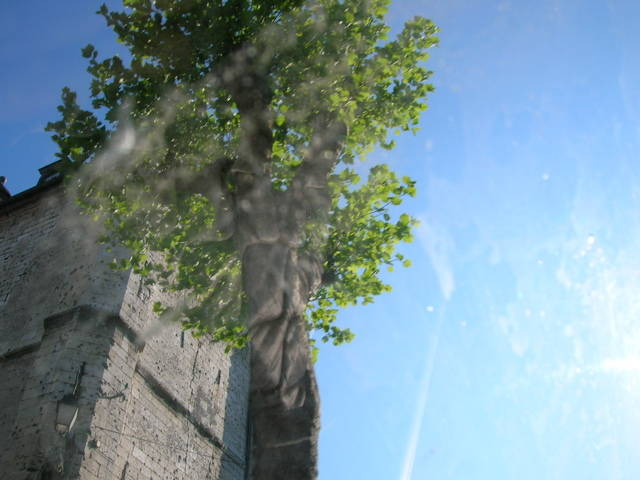
Je partirai lundi vers 18 h, pour être à la maison le soir... Je fais quelques détours et passe à Saint-Riquier, un saint peu connu, une cité fortifiée (habitants : les Centulois comme chacun a deviné) qui a résisté aux invasions depuis toujours ! Je photographie en passant le magnifique beffroi...

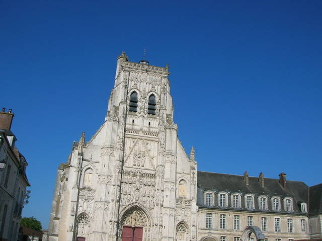
Et en face, la très belle abbatiale bénédictine, du XIIIème, mais modifiée par 4 abbés successivement et qui a connu tous les styles gothiques, avec une façade du XVème, finalement restaurée avec le respect moderne en 2006...
Stella 2010 : Un grand week-end de 4 jours, avec du beau temps et des vents en général agréables, une bonne ambiance. Dommage, aucun repas organisé, pas tellement pour la bouffe, mais c'est une occasion de se rencontrer entre bandes aux spécialités différentes et géographiquement distantes sur le site... Dominique Miquet envisage de faire un repas en commun le samedi soir l'an prochain, pourvu que ça marche, ça serait un minimum initial...